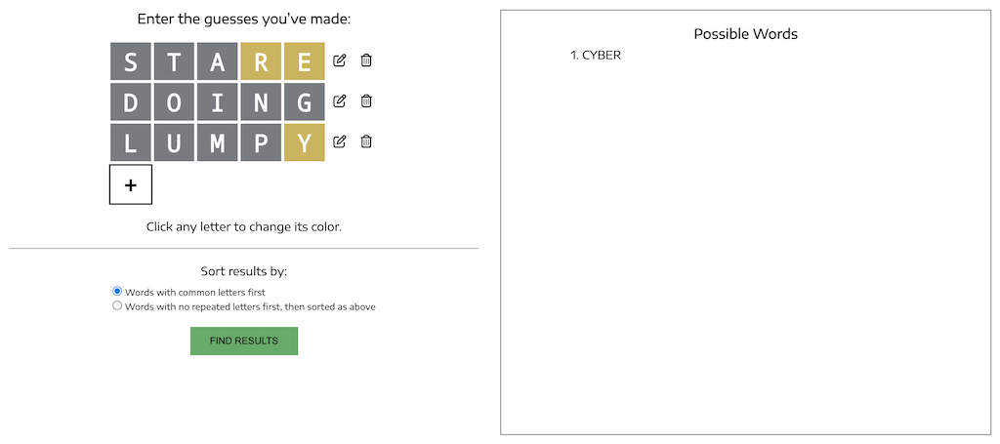

Enter the guesses you’ve made:
Click any letter to change its color.
Take results from:
Give me the most likely suspects.
Give me more options.
Sort results by:
If you have any questions, please see the User Guide below.
Possible Words
No results found. Please check your inputs and try again!
Showing only the top 75 of results.
ABOUT WORDLE MASTER
Wordle Master was made for all ordinary Wordle players who have ever just felt stuck several guesses into a game: for anyone who has run out of ideas for guesses and felt stumped.
For example, hypothetically speaking, if your first three guesses looked like this, would you be able to easily think of a good Guess #4?
With Wordle Master, this would be a cinch. Just type in those three words above and select a color for each letter: you can immediately find the one possibility for this particular target word.
No need to look through your guesses and figure out which letters are green, which ones are gray, which ones used to be yellow, which ones are still yellow—just type in your guesses exactly as you would into Wordle itself, and then click each letter to change its color.
HOW TO USE
Type your first guess into the input field at the top of this page labeled “Guess #1.”
If you have more guesses to add, click the button with a plus sign + that is beneath the words to add a new word, as many times as you like.
All the letters will be gray by default. To change the color of a letter, click on it to change it from gray to yellow, yellow to green, or green to gray. (There are occasionally exceptions to this: sometimes a letter cannot be yellow, or gray. An explanation of this is below.)
To change the letters of a word, use the “edit” button to the right of the word.
To remove a word entirely, use the “delete” button to the right of the word.
When you’re ready, change the sorting method if you like, and then click “Find Results” to find all the possibilities for the target word!
SORTING METHODS
How are the output words sorted?
You may notice that you have two options for how to sort the output words: “Words with common letters first” and “Words with no repeated letters first, then sorted as above.” Here’s a much more detailed explanation of what those two options mean.
By default, the words are sorted by how common, overall, their letters are. To be precise, each letter of the alphabet is assigned a “point value” based on how frequently it appears in dictionaries. Then each word is assigned a point value equal to the sum of the values of its letters. Finally, the words are sorted by point value.
For example, since E, A, and S are some of the most common letters, words like ARISE and STARE will end up very near the top of the list.
So that’s all that “Words with common letters first” means: the normal, default sorting method.
However, some of the very top words according to this method, such as “EERIE,” would not actually be good guesses for Wordle at all. Why? Because if you guessed “EERIE,” you would only be getting information about three different letters (E, R, and I), but you probably want to get information about as many different letters as possible. You want to guess a word with five different letters, if you can.
Hence the alternative sorting method. When you select “Words with no repeated letters first, then sorted as above,” the output words will first be sorted by number of repeated letters. Thus, all the words with five different letters will come first, then all those with one repeated letter, and so on. Only within each of these sections will the words be sorted using the ordinary method.
LETTER COLORS
Why can’t I turn a letter yellow/gray?
The short answer is that it’s a safety measure to help keep you from entering impossible inputs.
Wordle Master won’t let you turn a letter yellow if the same letter is gray earlier on in the word, and, similarly, you won’t be able to turn a letter gray if the same letter is yellow later on in the word. This is because such feedback is impossible to receive in Wordle.

Impossible!
Let’s say your guess has two E’s in it. There are only three possibilities:
There are two (or more) E’s in the target word as well, in which case both E’s in your guess would be colored: neither of them would be gray.
There are no E’s in the target word, in which case both E’s in your guess would be gray.
There is one E in the target word. If this E is in the same position as one of the E’s in your guess, then that E will be green, and the other one will be gray. Otherwise, the first E will always be yellow, and the second will be gray.
But under no conditions will the first E be gray while the second is yellow, and this is why you may not always have complete freedom when selecting colors.
Thus, Wordle Master will catch and prevent any inconsistencies in your input that are within a single word. But you can still input inconsistencies that are across multiple words. For example, you could input two words that both have an E, and turn the E in the first word green while leaving the E in the second word gray. Wordle Master won’t catch that; it’ll just output “No results.”
WORD LISTS
Just like Wordle itself, Wordle Master uses two word lists. The first, of 2,309 words, corresponds to the list from which the Wordle target word is chosen each day. It is from this list that all of Wordle Master’s output words are taken.
However, Wordle does not have an official published word list. Our word list is very similar to the list actually used by Wordle, but it is not perfect. Not one, but several times recently, the Wordle word has not been on our list, and another such incident is always possible.
For this reason, Wordle Master also gives you the option to take the outputted words from the second list, described below. You’ll probably get a lot of strange results that will never actually be the target word, but the target word itself is practically guaranteed to be among them.
The other list is much longer: 14,855 words. It is the list of valid guesses in Wordle. They’ll let you guess words like “AAHED” (meaning “screamed”; it is the past tense of “AAH”) and “YOYOS,” but they’ll never make the target word anything like that.
Wordle Master checks your input words against this list too. However, it won’t actually prevent you from entering in a non-word; you’ll be given a warning, but you’ll still be able to select “Find Results,” just as always.
Here’s the solution to the above hypothetical Wordle game:
